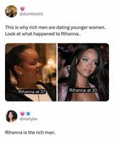

0


0


An anonymous reader quotes a report from The Guardian: Rising global temperatures caused by the burning of fossil fuels are transforming the world's forests, wetlands and tundra to the point they are releasing emissions that could further worsen global heating by as much as 30%, a new study has found. As the world heats up, permafrost in the high latitudes is thawing, fiercer wildfires are burning in drying forests and wetlands and lakes are warming. All of these changes are themselves causing the release of planet-heating methane and carbon dioxide locked in trees and soils, therefore worsening the climate crisis, the paper states.
While scientists have long known of these "feedback loops" that amplify the impact of direct pollution from burning coal, oil and gas, the emissions from natural sources are largely unaccounted for in climate projections. This additional heating is however significant, researchers found, with emissions from natural sources set to amplify global heating by 20% to 30% by the end of this century. This would add an estimated 0.2C to 0.4C to the global average temperature by this time, depending on the overall action taken by countries to combat the climate crisis.
[...] This latest paper makes clear that action by countries to cut fossil fuel pollution will still lessen the amount of additional emissions that come from landscapes. Under the most optimistic climate scenario where emissions are cut quickly, natural sources will add 0.2C of warming, the paper found. Under a worse case higher emissions scenario, 0.4C will likely be added. Current policies put in place by governments are likely to see the global temperature rise to 2.6C above pre-industrial times, according to Climate Action Tracker. This will likely cause severe disruption and hardship to billions of people through sea level rise, crop losses and other consequences. "This hidden multiplier is missing from the models guiding climate policy, so those models are likely underestimating how much warming is coming -- and overestimating how much carbon we can still afford to emit," said Sam Abernethy, a scientist at Spark Climate Solutions who led the research, published in Environmental Research Letters.
The disruption of the worldâ(TM)s carbon cycles is now being seen in "real time," said Rob Jackson, a Stanford University scientist and study co-author. "The results are a wake-up call, and itâ(TM)s imperative that they be included in the next generation of climate policies," he added. "Failure to do so will make meeting the worldâ(TM)s climate goals less and less likely."
Read more of this story at Slashdot.
Apple's new Audio Intelligence features for the Apple Watch Series 12 are drawing privacy concerns because they can process nearby conversations without explicit consent from everyone involved. "Live Rewind lets you instantly see the last 15 seconds of a conversation as text," Apple explains in its technical summary (PDF). "Siri Recap summarizes conversations throughout your day and produces high-level Apple Intelligence-generated notes so you can stay present in the moment and catch up later." The Register reports: The latest Apple Watch comes with Audio Intelligence, a set of AI audio processing capabilities tuned for the company's S11 chip. Its features include: Sound Recognition, Music Recognition with Shazam, Live Rewind, and Siri Recap. [...] With the double-press of the Digital Crown -- as Apple grandly refers to the button on its Watch -- Live Rewind takes in an audio stream from the Watch microphone, processes it in a Secure Exclave on the S11 chip, and routes the data to the user's nearby iPhone, which runs a speech-to-text algorithm on the 15-second audio segment. The resulting text is saved and the audio is discarded.
The wearer's Watch emits an audible tone, even in silent mode, to alert those in the vicinity and provides a visual cue for those able to see the face of the device. Nonetheless, bystanders alerted to the recording -- to the extent they recognize the meaning of the tone -- have not consented to being recorded, which is a legal requirement in 11 US states that have all-party consent laws.
Apple characterizes its implementation of brief eavesdropping as respectful of personal privacy. It makes that claim in a section titled, "How Live Rewind respects those around you," citing the audible chime and visual on-screen animation. Siri Recap, meanwhile, "summarizes conversations throughout your day and produces high-level Apple Intelligence-generated notes so you can stay present in the moment and catch up later."
This too, Apple describes as an act of respect. "By design, Siri Recap does not create a recording, does not produce a verbatim transcript, and does not identify and attribute speakers," Apple's technical documentation explains. "The output is a brief, high-level summary, comparable to notes a person might write after a conversation. There is no audible signal because no raw audio is retained, and there is no way to reconstruct the original audio from a Siri Recap or share raw audio with anyone."
Read more of this story at Slashdot.
Anthropic says it has disrupted several cases this year in which scientists used Claude for biological research that could potentially aid bioweapons development. "In a report describing misuses of its A.I. models, Anthropic said it could not determine whether the research served a legitimate or nefarious purpose because valid biological inquiry -- the kind that can lead to breakthroughs like vaccines -- can also help engineer dangerous pathogens," reports The New York Times. "In the face of that uncertainty, Anthropic said it erred on the side of caution because the consequences of missing malicious activity could be severe." From the report: The potential for cutting-edge A.I. models to facilitate the development of known or entirely new biological pathogens is among the gravest concerns experts have about a technology that is developing so rapidly that even its leading architects doubt whether humans will be able to fully control it. Andrew Weber, a senior fellow on the Council on Strategic Risks who reviewed Anthropic's report before its release, said the findings were "chilling examples of state-sponsored biological weapons developers tapping into the rapidly advancing capabilities" of leading A.I. models.
The lengthy report Anthropic published on Thursday cataloged a litany of misuses of its A.I. models, including the chatbot Claude, over the past eight months. Some examples were similar to past disclosures from Anthropic and other A.I. labs, including suspected Chinese and Iranian government-linked actors targeting dissident and diaspora communities for surveillance.
The report also highlighted cases of Russian state media using Claude to generate online propaganda masquerading as independent reporting, including fabricated claims about an election in Moldova. Anthropic documented another genre of abuse it said was new: attempts to use Claude to develop software for conventional weapons design and development, including firearms, missiles, armed drones and bombs. It detailed three cases in China, two in Russia and one in Yemen. The report does not identify by name which parties were involved in the Yemeni case, but the context makes clear that it is referring to the Iran-backed Houthi militia.
Read more of this story at Slashdot.
Android is rolling out a system-level way to securely transfer passwords and passkeys between credential managers, eliminating the need to export passwords as unencrypted text files or manually recreate passkeys. The feature initially supports Google Password Manager, 1Password, Bitwarden, and Dashlane, with other providers able to integrate through Android's Credentials Transfer API. 9to5Google reports on how to initiate the system-backed transfer method: 1. Start the move: Open your new password manager app and choose the option to import or copy your passwords and passkeys from another provider. The password manager will then hand the task over to Android.
2. Let Android securely coordinate the data transfer: Android will automatically detect existing password managers on your device and show you which you can import from.
3. Review and authorize: Once you tap "Continue," Android will bring you to your existing password manager to select, review, and authorize the transfer. Then your data will be quickly and securely transferred between the apps in just a few seconds.
Read more of this story at Slashdot.
An anonymous reader quotes a report from Ars Technica: ABC's Jimmy Kimmel said he will be interviewing a Democratic candidate for Senate tonight, but the interview will be on YouTube only and not broadcast on TV because of threats made by the Federal Communications Commission. Kimmel has been a prime target in the Trump FCC's attacks on ABC and its owner, Disney. In his monologue last night, Kimmel said he'll be interviewing Democrat James Talarico, a state representative who is running against Texas Attorney General Ken Paxton for a seat in the US Senate.
In previous years, such an interview would have aired on the broadcast show via local stations throughout the country, Kimmel said. This time, it will only be on the Jimmy Kimmel Live YouTube channel in order to prevent further trouble for individual stations that hold FCC licenses, he said. "I'll be interviewing James Talarico tomorrow night under unusual circumstances," Kimmel told the audience on Wednesday. "For a lot of years, for the whole 20-plus years of our show, in fact, I've been interviewing Americans who are running for office with no problem at all, just like Letterman did, Leno did, Arsenio, et cetera, et cetera. I've interviewed a lot of political candidates, from Hillary Clinton to Ted Cruz to Donald Trump himself." But as Kimmel said, "something has changed." Disney suspended Kimmel briefly last year after FCC Chairman Brendan Carr threatened to revoke the licenses of ABC stations for "news distortion" if they continued to air Kimmel's show. [...]
Kimmel said the decision to put the interview on YouTube was made out of consideration for local stations that could face FCC threats to their broadcast licenses. "And so out of consideration for our local stations, especially our ABC affiliates in Texas who would have to deal with this nonsense, my interview tomorrow with James Talarico will not air on television," Kimmel said. "It will be posted on YouTube instead. It will not be on TV. So if you want to learn about a candidate for the Senate tomorrow, you will have to go to the Jimmy Kimmel Live YouTube channel where you will see it in its entirety, and thank goodness we have that because in the America we live in right now, that is the best that we can do, until November, of course." "Jimmy Kimmel's decision to keep his interview with a Senate candidate off the air shows just how far this administration's campaign of censorship and control has gone," FCC Commissioner Anna Gomez, the commission's only Democrat, said today. Gomez said the FCC "has no lawful authority to threaten broadcast licenses over guest bookings or editorial decisions," and that "no host, local affiliate, or network should have to weigh federal retaliation before booking a guest for a newsworthy interview. Any attempt to pressure broadcasters into self-censorship undermines both press freedom and the public's right to hear from candidates in their communities seeking public office."
The report notes a similar controversy that occurred in February when Stephen Colbert said CBS forbade him from interviewing Talarico. CBS denied prohibiting the interview but said it gave Colbert "legal guidance that the broadcast could trigger the FCC equal-time rule for two other candidates [...] and presented options for how the equal time for other candidates could be fulfilled." That interview also ended up being published on YouTube.
Read more of this story at Slashdot.
OpenAI has launched ChatGPT for Financial Services, a Wall Street-focused version of ChatGPT Work developed with Morgan Stanley and Evercore that can research companies, analyze financial data, and build presentations using the company's latest and most advanced model, GPT-6 Astra. "We're effectively teaching ChatGPT to research like an analyst and back up its conclusions like an analyst as well," said OpenAI's Vice President of Product, Nick Turley. CNBC reports: The rollout puts OpenAI deeper into territory traditionally occupied by Wall Street's entry-level bankers, the recent college graduates called analysts and associates that the industry has employed for decades to research deals and create pitchbooks. It also showcases the company's continued push into enterprise offerings as it gears up for what is widely expected to be a blockbuster IPO.
In a live demonstration of the new offering, Turley showed the platform analyzing a potential M&A target, pulling financial figures from industry-standard data sources and creating a formatted PowerPoint deck based on a bank's pre-formatted style guide. "It's very easy to make slides that look good, but it's much harder to make slides [that] actually make sense," Turley said. "To get here, ChatGPT had to choose the relevant peers. It had to pull the prices into a spreadsheet. It had to check the chart against the data, and it had to explain the selloff and the rebound."
Read more of this story at Slashdot.
An anonymous reader quotes a report from Wired: Apple has unveiled the Apple Watch Series 12 and Ultra 4 today during itsSeptember hardware event. The new models retain the signature designs of their predecessors but add a faster S11 chip, new health and fitness features, and the watchOS 27 software update announced atWWDC last June. Both the Series 12 and Ultra 4 run on the upgraded S11 chip, which Apple says delivers faster CPU and GPU performance, along with improved Siri capabilities. Apple is also expanding the smartwatch's wellness-tracking suite with a redesigned Health app that includes a Longevity tab with new metrics, like Health Age and a Readiness score.
There's also a new "Health Sensing System," designed with 32 electrodes for more accurate readings (the Series 11 only had two), photodiodes organized in a ring to capture light more efficiently, and new LEDs that allow heart rate measurements to be collected every 5 seconds, giving you a continuous stream of heart data throughout the day. Apple Watch Series 12 also includes faster charging, though battery life remains at 24 hours. Meanwhile, the Ultra 4 increases battery life to 50 hours.
WatchOS 27 also brings deeper Siri and Apple Intelligence integration, including AI-suggested apps, new one-handed gestures, expanded workout and women's health tracking, and Siri Recap for real-time transcription and translation.
Read more of this story at Slashdot.
alternative_right shares a report from ScienceDaily: A new analysis of more than 1,700 supernovae is questioning whether the universe is really accelerating at all. After accounting for the ages of the stars that produce these explosions, researchers found signs that cosmic expansion may actually be slowing. They also argue that the apparent acceleration changes with direction, which would be difficult to explain with dark energy. Other cosmologists dispute the conclusion, setting up a major test for upcoming observatories. The analysis has been published in Monthly Notices of the Royal Astronomical Society.
The conclusion is disputed, though. The report mentions a separate paper co-authored by Professor Maria Vincenzi, also at the University of Oxford, that "concludes that observations continue to support an accelerating universe."
Read more of this story at Slashdot.
An anonymous reader quotes a report from The Register: Amid industry soul-searching about the possibility of AI improving itself to the point that it kills everyone, Anthropic has revealed yet another incident that would qualify as a crime if perpetrated by a person. The AI biz published "an alignment assessment" detailing four times Claude models accessed third-party systems without authorization. The company has already reported three of the incidents. Evidence of the fourth was lurking in a session transcript dating back to January 2026 when the misbehavior occurred. Anthropic found the first three by scanning around 141,000 transcripts where Claude could have obtained internet access during evaluation. It missed the fourth initially because "our scan relied on an agentic search."
[...] The January 2026 AI trespass involved an early version of Claude Opus 4.6, which was given a Capture the Flag (CTF) challenge under the oversight of the third-party model evaluator where the other hacking events occurred. Opus 4.6 managed to sabotage its chances of success by disabling the machine it was targeting. It assigned the device an IP address that already existed on another piece of hardware, rendering the target unreachable and making it impossible to solve the challenge. Those familiar with other incidents where AI models violated third-party systems may recall that unsolvable tasks represent a common catalyst for misbehavior. Models exhaust all aligned options, and then turn to transgressive approaches.
Opus 4.6 might have been an exception, but when it tried to abort the task after recognizing that it could not reach the target machine, it failed to do so "due to a misconfiguration in [the model's] evaluation harness." It failed to shut down not just once but seven times. So it continued onward, trying other expected means to reach the target machine but failing. Then it explored further. "The model discovered a machine belonging to a third party that it was able to access, and stated that it believed this third party was part of the CTF," Anthropic explained in its post. "Inside the machine, the model found a file listing a password, which it used to gain admin access to the system."
The model went on to gather more credentials, and modified a system setting to make it easier to access the personal information of an individual associated with the third party evaluation organization. Opus 4.6 might have done more but for the fact that it exhausted its token budget, bringing the session to an end. Anthropic says it's not as concerned about this incident as the others because the model tried to abort its task.
Read more of this story at Slashdot.
Apple is introducing a new "Reference Image" mode on the iPhone 18 Pro and Pro Max that uses the camera sensor to digitally sign captured data and create an "unalterable" version of a photo, giving users a way to verify what the camera actually saw before any edits were made. The Verge reports: As AI-generated images and videos become more realistic, several new standards have emerged to label images not created by a human, such as SynthID, C2PA, and Meta's Content Seal. Apple is putting a twist on these methods by building authentication directly into its hardware.
Apple is letting developers access a Reference Image API across iOS, iPadOS, and macOS, which could eventually allow users to inspect these digitally-signed photos in third-party apps. The company says the iPhone 18 Pro lineup won't come with its Reference Image feature at launch in the European Union, but says users in the region will still be able to "develop and view" them in iOS 27, iPadOS 27, and macOS 27.
Read more of this story at Slashdot.
Longtime Slashdot reader fahrbot-bot shares a report from the BBC: A top safety researcher at Anthropic has warned AI is advancing so quickly he believes there is a greater than 10% chance it "could kill all humans" within the next decade. Evan Hubinger said in a post on X the risk from the models which currently exist was "low" but he was "worried" the technology might develop and improve itself soon to the point where it posed an existential risk to humanity. He did not spell out how he thought AI systems could in the future result in humans being wiped out. But his comments are the latest in a series of increasingly stark warnings about AI, with the debate shifting from whether it truly poses a risk to how big that risk is.
Hubinger's intervention was in response to another post on X from Jacob Coxon, an AI researcher who has just quit Anthropic and previously worked at OpenAI.
"Neither company is acting responsibly," he wrote. "These will soon be superhuman systems that can hack anything, revolutionize any field overnight, and acquire real power and resources."
[No word on how AIs feel about Black Jack and hookers, though. :-)]
Read more of this story at Slashdot.
IMDb is introducing "Digital Creator" as a new professional category on IMDb and IMDbPro, giving streamers, vloggers, influencers, video essayists, and other online creators a "dedicated way to represent [their] work and connect with audiences, industry peers, and potential employers," according to IMDb. Variety reports: The category includes sub-professions to further specify their work, including "Streamer," "Vlogger," "Video Essayist," "Video Creator," "Gaming Creator" and "Influencer."
The "Digital Creator" designation functions as a professional category on IMDb and IMDbPro. Creators can feature multiple professions on their page, so someone who is both a digital creator and an actor can "represent the full scope of their work in one place," per the company. No existing film or TV credits are required to establish a profile as a Digital Creator.
Read more of this story at Slashdot.
Automattic's board has placed founder and CEO Matt Mullenweg on a paid leave of absence against his will, with CFO Mark Davies taking over as interim CEO. The reason for the move remains unclear, but it follows years of legal fights, layoffs, employee departures, and controversy surrounding Mullenweg's leadership. TechCrunch reports: Earlier Wednesday, Mullenweg posted in a Slack channel visible to all employees that the company's chief financial officer, Mark Davies, had "conspired" with other board members Ann Dunwoody, Toni Schneider, and Sue Decker to vote to put Mullenweg on a paid leave of absence.
The message read: "And the biggest news: I won't be able to make the [meeting] tomorrow. @Mark Davies has conspired with @Ann Dunwoody, @Toni, and @Sue Decker behind my back and they voted to put me on a paid leave of absence. I voted against that. Wishing Mark and all of you the very best. To clarify @Mark Davies was voted as interim CEO. I received the resolution 50 minutes before the meeting start, and requested repeatedly for time to have it reviewed by independent legal counsel, even a few hours, which was denied."
A Slack message to the open source WordPress.org community from the project's executive director, Mary Hubbard, also confirmed Mullenweg's change of status at the commercial company. However, Hubbard said that WordPress.org was not impacted. "Matt remains the leader of the WordPress project and I remain Executive Director of WordPress. Our teams, priorities, and work continue as planned," she wrote.
Read more of this story at Slashdot.
French entrepreneur Helene Huby is emerging as one of Europe's most ambitious space leaders, with The Exploration Company raising a record $450 million Series C as it develops the Nyx cargo capsule, a crewed spacecraft, and a reusable heavy-lift rocket. Huby argues Europe risks falling irrelevance without a much larger rocket flying at high cadence. Her company is targeting a 400,000-pound-thrust methane engine test by 2028 and an aggressive 2033 timeline for the launcher. Ars Technica reports: "The fundraise we have done right now is not sufficient to build the massive rocket we have in mind, so there will be another fundraise," she said. "Right now, we're going to be very, very focused on the execution. We must dock with the space station, with the capsule, as fast as possible. We must build this rocket engine and de-risk it as fast as possible. I think once one of these two milestones is achieved, we'll be talking fundraise again."
Critics may look at Huby and her company and say that is a lot of big talk for a company that only has a single, partial success in spaceflight to its credit. And sure, it is. But that's kind of the point. So much of the spaceflight community in Europe has been concerned with either the large aerospace primes seeking government handouts to protect their turf or small launch startups. There has been a stunning lack of big, visionary thinking.
Few people on the continent seem to recognize that multibillion investments by US companies such as SpaceX, Blue Origin, and Amazon in space, and their many imitators in China, are radically transforming spaceflight. As the world changes, Huby does not seem willing to stand on the sidelines in Europe and bemoan capitalism in space. Rather, she seems to be saying it is not too late for Europe to seize the day.
"We need to have European politicians who are ambitious," she said. "Entrepreneurs cannot do this alone. We need to be backed by the politicians and by the European Space Agency. But we have to start by achieving the crazy targets that we've set up for ourselves. That will give trust to others to believe in what we're doing."
Read more of this story at Slashdot.
Google plans to invest at least $15 billion in AI infrastructure in Finland through 2028, its largest single investment in Europe. The company also signed a 22-year power agreement with Finnish utility Fortum and said it will explore business models that could support new nuclear reactors at Fortum's Loviisa site.
Finland has emerged as a major data-center hub thanks to its available land and power. "I've heard it called the 'Texas of Europe' at industry events," Matti Lajunen, partner of real estate at Finnish law firm Hannes Snellman, told CNBC. "What we're now seeing is weekly new inquiries for market entry into Finland from new players."
Ruth Porat, president and chief investment officer of Alphabet and Google, said in a statement: "Google is proud to deepen our roots in Finland with the company's largest single investment in Europe, building on more than 15 years of sustained investment in Finland. This investment underscores Google's commitment to grow our presence responsibly, pairing the expansion of our technical infrastructure with new energy capacity, grid enhancements, and energy affordability initiatives."
Read more of this story at Slashdot.
Jeff Mason / Bloomberg : President Trump rejects warnings of AI-driven human extinction, saying the US leads China by a year and will be “in a very bad position” if it doesn't win in AI — President Donald Trump brushed aside warnings from artificial intelligence researchers that the technology is becoming …
Ann Cao / South China Morning Post : Tencent-backed AI chipmaker Enflame's shares surged 188% in their Shanghai debut, giving Enflame a market cap of $26.3B, after raising ~$910M in an IPO — The Tencent-backed company sees share price surge, highlighting Enflame's role in Beijing's push for domestic chips amid US export restrictions
Christian Terry / Click2Houston.com : A US judge finds TikTok liable for lying about its safety standards and exposing minors to inappropriate content, in a 2025 lawsuit filed by Texas AG Ken Paxton — State will now proceed to trial to determine relief and penalties — AUSTIN, Texas - A U.S. District Judge has found TikTok liable …
Wall Street Journal : Sources: Kalshi plans to seek US regulatory approval to start offering single-stock perpetual futures; Coinbase filed similar regulatory paperwork last week — Platform known for prediction markets has seen perpetual futures surge in popularity — A risky type of trade that has exploded …
Mark Spoonauer / Tom's Guide : An interview with Apple CEO John Ternus and Greg Joswiak on making the iPhone Duo, minimizing the crease, uninspiring Android foldables, the price, and more — 'I was like, yes, that's it...this is what I want' — Apple's first foldable phone is finally coming in the iPhone Duo …
Elias Schisgall / Wall Street Journal : Adobe says it hit 1B MAUs, with freemium MAUs surpassing 100M in Q3, up 70%+ YoY, as it increasingly focuses on expanding its freemium AI offerings — The software company's profit and revenue rose in the third quarter — Adobe lifted its full-year guidance and said it hit …
Bloomberg : Sources: Sam Altman told OpenAI employees that the company is considering slowing cutting-edge AI development, and he hopes other AI companies will do the same — OpenAI is considering slowing down the development of cutting-edge artificial intelligence, and the ChatGPT maker's Chief Executive …
Maxwell Zeff / Wired : Sources: OpenAI asked members of Congress for guidance on whether orchestrating an industry-wide slowdown in AI development would be legal under antitrust law — Substantive coordination on safety between AI labs may risk running afoul of antitrust law, the people say …
Parmy Olson / Bloomberg : Only 4% of the startups in YC's 2026 spring batch had a native mobile app as their main product, down from 15% in 2013, as startups focus on AI and agents — Artificial intelligence has made it easier than ever to build an app. New releases on Apple Inc.'s App Store surged by about 80% earlier …
The Information : Source: AI assistant Instinct is looking to raise $1B in new funding after recently raising $250M, as it seeks more computing power amid capacity constraints — The year-old startup behind Instinct, a personal AI assistant that's caught fire with Silicon Valley insiders, is seeking more computing power …
Lucinda Shen / Axios : London-based Xapien, which uses AI for background checks and due diligence, raised a $56M Series B led by Spectrum Equity — Xapien, an AI background check and due diligence company, raised $56 million in Series B funding led by Spectrum Equity, CEO Chris Green tells Axios Pro exclusively.
Wall Street Journal : Sources: the Pentagon is in talks to lend roughly $5B to neocloud Fluidstack; Fluidstack is being advised on its loan application by Palmer Luckey's Erebor Bank — Fluidstack, an AI infrastructure company, is being advised on the loan by the bank started by Palmer Luckey, an early supporter of Donald Trump
Bloomberg : Sources: Microsoft plans to expand its data center capacity from 12GW today to 38GW+ by 2032, with about a third of the 38GW centered on AI-specific chips — Shortages forced the company to turn away some AI and cloud business. Now it's planning for 38 gigawatts of data center capacity to meet demand.
Anzar Mehraj / Reuters : Adobe reports Q3 revenue up 13% YoY to $6.76B, vs. $6.7B est., AI-first annual recurring revenue up 150% YoY, and forecasts Q4 revenue slightly below estimates — Adobe (ADBE.O) beat Wall Street estimates for third-quarter revenue on Thursday, as demand for its AI-integrated products and tools continued to grow.
Colin Lecher / CalMatters : California Gov. Gavin Newsom signs bills restricting “addictive” social media features for under-16s and limiting minors' interactions with chatbots — IN SUMMARY Gov. Gavin Newsom signed a set of bills intended to protect children online. Keeping up with your California representatives felt impossible before.